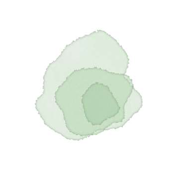
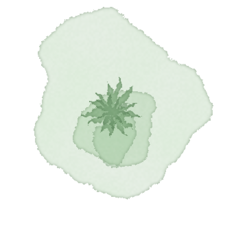
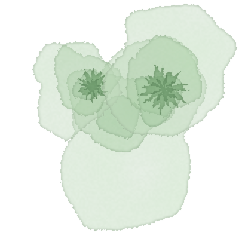
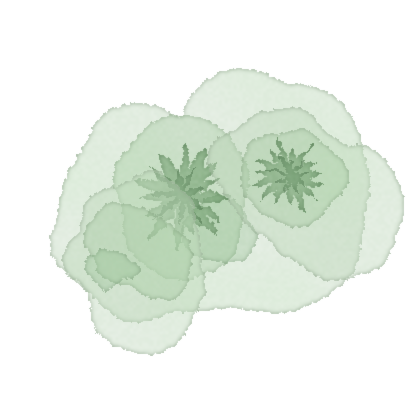
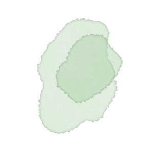
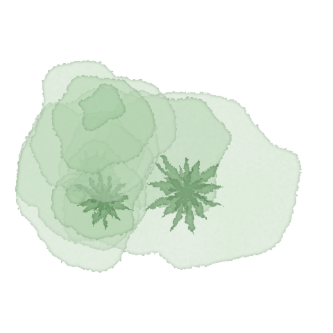
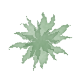
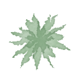
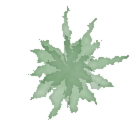
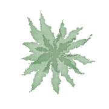

Antes del sí
Viernes, 12 de febrero
- Punto de encuentro
- Bomba La Sierrita, Palomino
- Hora
- 1:00 p.m.
Design system · v0.1
Un universo visual para una boda a la orilla del río Palomino, en los valles de la Sierra Nevada de Santa Marta. Papel de algodón, arena suave, verdes frondosos de acuarela y un río que recorre todo.
Ver el sitioTokens en css/tokens.css
01
Papel, no pantalla.
Fondos de arena, sombras de papel, texturas de algodón. Nada blanco puro.
El río guía.
Un solo trazo recorre la página de arriba abajo. El contenido se acomoda a sus orillas, alternando de lado.
Todo florece despacio.
Las cosas aparecen, no saltan. Duraciones largas, curvas suaves, nunca rebotes.
Tres voces tipográficas.
Didona para los nombres, máquina de escribir para la información, caligrafía para los susurros.
02
Muestreada de los materiales reales: las brochas del moodboard, el verde del logo, el papel de la invitación y las copas de la acuarela.
Arena · fondos y papel
Verdes · selva
Río y acentos
Tinta
03
Display · Bodoni Moda
Valeria Ortiz Jaramillo
La misma didona de alto contraste del monograma. Para nombres, títulos de sección y subtítulos. Nunca en mayúsculas sostenidas, nunca en negrita.
Información · Courier Prime
Palomino, Guajira, Colombia
12 y 13 de febrero 2027
La máquina de escribir de la invitación. Cuerpo de texto, fechas, horas, etiquetas y botones. Las etiquetas van en versalitas espaciadas.
Susurro · Parisienne
Reserva nuestra fecha
La caligrafía del save the date. Solo para frases cortas que anteceden un título, el "&" y nombres de momentos. Nunca para información.
04
Monograma
Siempre en green-700 sobre arena. Mínimo 32 px. Nunca sobre la acuarela directamente: déjale aire.
La selva · masa de acuarela

Composición de muchas copas que se solapan con palmas encima y huecos de papel, con los bordes del lienzo desvanecidos. Asoma por las esquinas del hero y, en versión pequeña, como masa a lo largo del río. La acuarela original de la invitación queda como referencia en assets/img/acuarela-rio.jpg.
Flora · acuarelas propias
Pintadas por tools/watercolor.py a partir de la paleta: varias veladuras superpuestas, contorno ondulado, temblor fino del borde, floraciones de pigmento y reborde oscuro al secarse. Fondo transparente, modo multiplicar. Florecen junto al río al hacer scroll y se desvanecen al salir. Rotarlas libremente: son vistas cenitales. Cambiar una semilla en el script da una pieza nueva.










El río · mancha de acuarela
Orilla de arena (dos veladuras) y agua (reborde, cauce, luz y una línea de pigmento a un solo lado), cada grupo con un filtro de acuarela: meandro, variación de ancho, temblor del borde y floraciones. Nada se anima dentro del agua: el río simplemente aparece con el scroll, con el frente fundido hacia la arena. En la página se pinta por tramos de 900 px que comparten coordenadas, así el ruido es continuo.
Formas y detalles
4:00 p.m.
Ceremonia
6:00 p.m.
Brindis
Piedras de río (radio orgánico --r-blob) para puntos y avatares. Hoja de línea fina para separadores. Línea de tiempo con piedritas verdes.
05
Papel y datos
Antes del sí
Drawer
Entra desde la derecha en 1.6 s con --ease-out; el fondo se oscurece apenas y se desenfoca. El contenido interior aparece escalonado 350 ms después. Cierra con Esc, clic afuera o el botón.
Reveal
Los bloques aparecen subiendo 28 px y fundiendo en 1.6 s.
Clase .reveal + --i para escalonar (120 ms por índice). Lo activa un IntersectionObserver al 15 % de visibilidad.
06
Pasa el cursor para sentir cada curva. Nada rebota. Lo lento es intencional: el río no tiene prisa.
Con prefers-reduced-motion todo aparece de inmediato y el río se dibuja completo.
07
Escala de espacio
Entre secciones: s-11 (12 rem). Dentro de una tarjeta: s-4 a s-6. Ancho de lectura: 34 rem.
El contenido en las orillas
Cada sección declara data-river="left|right|center": el contenido se pone de ese lado y el río curva hacia el otro. En móvil el río pasa detrás con un velo de arena.